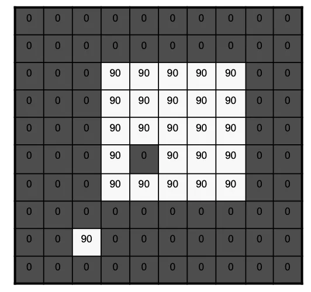
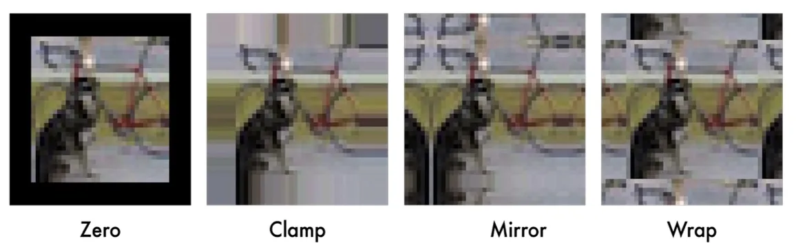

计算机视觉 · 第 2 章 图像处理基础
2.9 边界处理
前面讲卷积时都默认了一件事：核扣在图像上总能找到完整的邻域。可图像是有边界的，最外面那一圈像素的邻域有一半落在图像之外。这一节讨论两种处理办法——任其变小，或者先把边界补出来——并给出四种填充策略。话题不大，却决定了一次滤波之后图像还剩多大、边界附近的像素算得准不准。
1. 边界问题的来源
卷积的规则是把核扣在当前像素上，与它的邻域逐个相乘再求和。3×3 的核意味着每算一个输出像素，都要读入以它为中心的 3×3 邻域；而对图像最外圈的那些像素来说，邻域里有一半的位置在图像之外，根本没有取值，核越大，越界的范围越宽。这就是边界处理要解决的问题。
课件第 52 张用一个 10×10 的矩阵做示意：四周是 0，中间是一块值为 90 的亮区。核滑到最外圈时，必然有一部分压在图像外面，那里没有像素可用。
2. 选项一：不做任何处理
最省事的办法是不做任何处理：凡是邻域越界的输出位置，干脆不算。代价就写在括号里——图像滤波（卷积）后会变小。变小多少由核的尺寸决定，输出尺寸 = 输入尺寸 − 核尺寸 + 1：3×3 的核扣在 10×10 的图上，能完整放下核的位置只剩 8×8 个，也就是每边被削掉一个像素。图像越小、核越大，损失的比例越明显。
课件第 52 张把前后两种情况画在一起：上面是 10×10 的输入矩阵，下面是卷积得到的输出矩阵，尺寸明显小了一圈。这种做法实现最简单，代价是图像尺寸发生了变化，如果后续处理依赖固定的尺寸，就得额外记住这个偏移。

3. 选项二：先填充，再滤波
第二种做法是对原图像四周填充额外的行或列，使用不同的策略填充。边界补齐之后，最外圈的像素也有了完整的邻域，卷积就不必丢弃任何位置，因此可保持图像大小不变。代价是这些补出来的像素本来并不存在，取值只能由人来定，而不同的填法会影响边界附近算出来的结果。
课件第 53 张给出四种填充策略：
- 填充 0 值像素：做法最简单，在图像外面补一圈 0。它会人为造出一条从图像内容到 0 的突降；如果后面还要做边缘检测，这条突降很可能被当成图像四周的一条真实边缘。
- 填充对应边缘像素：把最外圈的像素值直接向外复制，相当于认为图像在边界之外继续保持边缘处的取值。它不引入新的突变，是工程实现里很常见的一种默认做法。
- 与边缘区域对称填充：把边界当作镜面，让图像内部的像素值对称地折到外面去，补出来的值同样来自图像本身。
- 填充对边区域像素：把图像另一侧的像素搬过来，相当于认为图像在横竖两个方向上首尾相接、循环出现。
四种策略没有绝对的好坏：越简单的策略算得越快，越「讲道理」的策略，在边界处引入的假响应越少。选哪一种，取决于后续任务对边界区域的敏感程度——如果只关心图像中间的目标，直接不做处理、让它变小也未尝不可。

本节小结
- 边界问题的来源：卷积需要完整的邻域，图像最外圈像素的邻域有一半越界，核越大越严重。
- 选项一：不做任何处理——越界的位置不算，滤波后图像变小；输出尺寸 = 输入尺寸 − 核尺寸 + 1，10×10 的图配 3×3 的核只剩 8×8 个输出位置。
- 选项二：先对原图像四周填充额外的行或列，再滤波，这样可以保持图像大小不变。
- 四种填充策略：填充 0 值像素、填充对应边缘像素、与边缘区域对称填充、填充对边区域像素；其中填充 0 值会在边界造出人为的突降，而突降在 2.7 节里正意味着一个大梯度，所以它最容易在边缘检测时被误认为边缘。
- 边界处理的取舍在「实现简单」与「边界不引入假信息」之间；它不是独立的知识点，而是把前面讲的卷积真正落到图像上时必须补的一步。